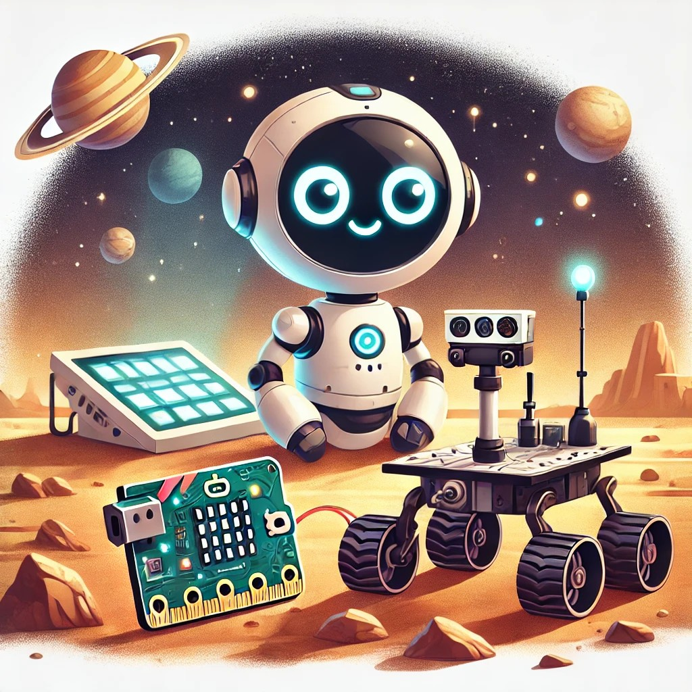

¡Hola, humano! 🚀
¿Alguna vez has soñado con ser un astronauta o un científico que explora planetas lejanos? Con la placa Microbit y el robot Maqueen, te convertirás en el ingeniero de tu propio rover de exploración espacial, ¡igual que el famoso rover Curiosity de la NASA! 🌌
Junto con ROBO, aprenderás a programar sensores y actuadores para que tu rover navegue por terrenos difíciles, esquive obstáculos, y recolecte datos importantes en un entorno simulado de otro planeta. 
En esta actividad, no solo aprenderás a programar, sino también a diseñar y a tomar decisiones como un verdadero ingeniero espacial.
¡Es hora de explorar, programar y descubrir nuevos mundos! 🚀🪐